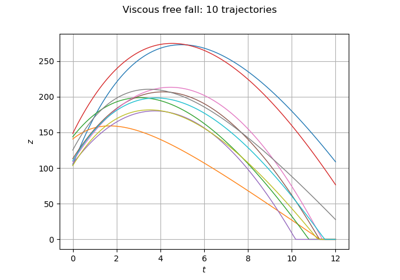
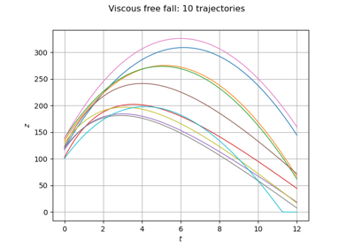

ViscousFreeFall¶
- class ViscousFreeFall¶
Data class for the viscous free fall.
Examples
>>> from openturns.usecases import viscous_free_fall >>> # Load the viscous free fall example >>> vff = viscous_free_fall.ViscousFreeFall()
- Attributes:
- dimThe dimension of the problem
dim=4.
- outputDimensionThe output dimension of the problem
outputDimension=1.
- tminConstant
Minimum time, tmin = 0.0
- tmaxConstant
Maximum time, tmax = 12.0
- gridsizeConstant
Number of time steps, gridsize = 100.
- meshIntervalMesher
- verticesVertices of the mesh
- distZ0Uniform distribution of the initial altitude
ot.Uniform(100.0, 150.0)
- distV0Normal distribution of the initial speed
ot.Normal(55.0, 10.0)
- distMNormal distribution of the mass
ot.Normal(80.0, 8.0)
- distCUniform distribution of the drag
ot.Uniform(0.0, 30.0)
- distributionJointDistribution
The joint distribution of the input parameters.
- modelPythonPointToFieldFunction, the exact solution of the fall
ot.PythonPointToFieldFunction(dim, mesh, outputDimension, AltiFunc)
- __init__()¶
Examples using the class¶


Define a connection function with a field output
Define a connection function with a field output

Define a function with a field output: the viscous free fall example
Define a function with a field output: the viscous free fall example